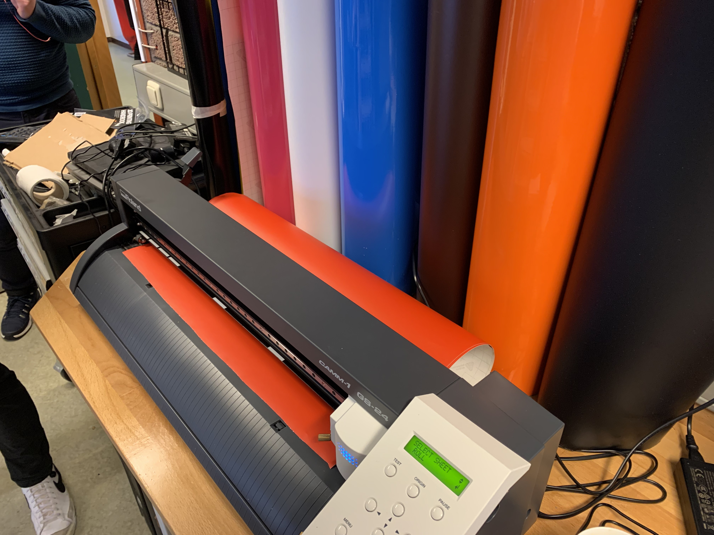
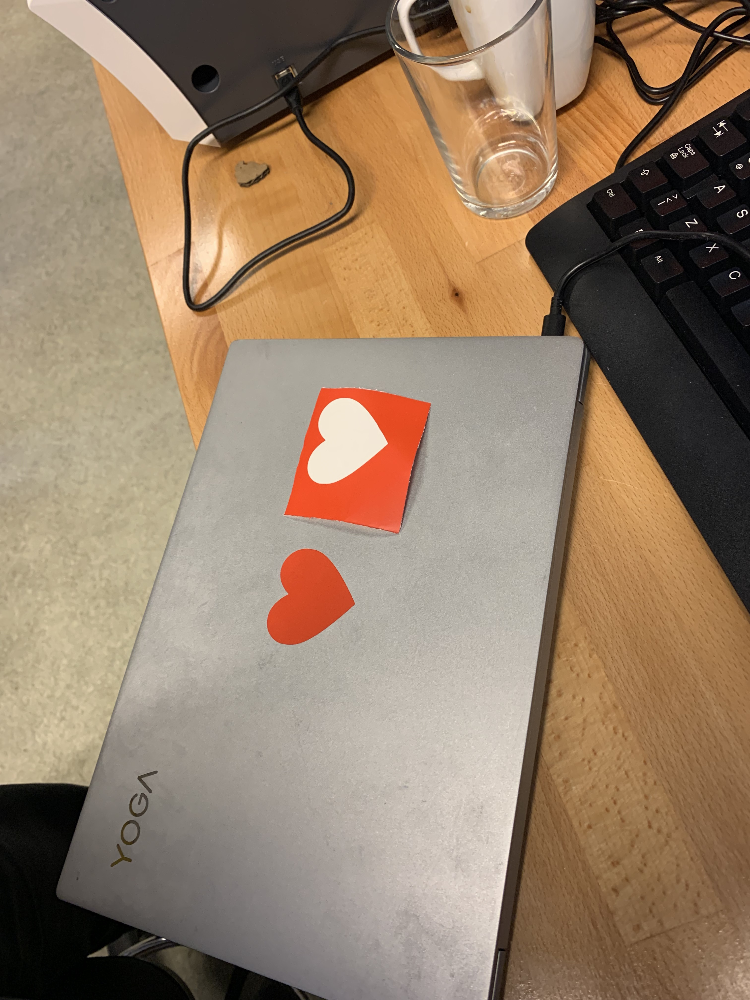
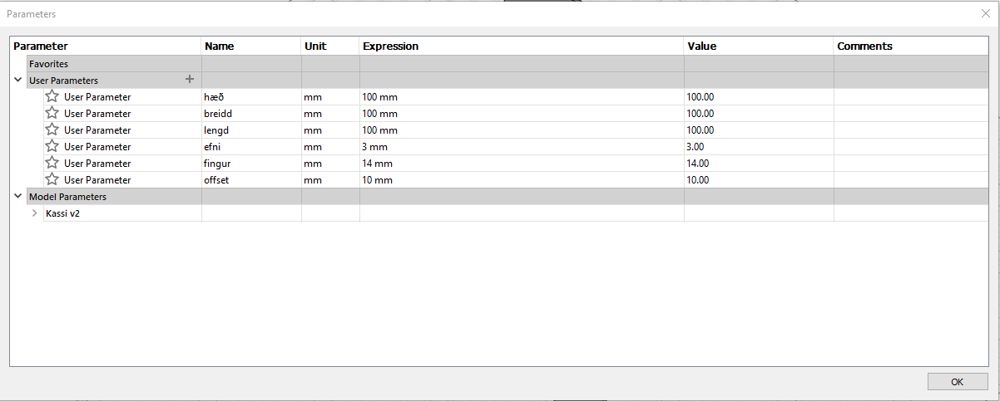
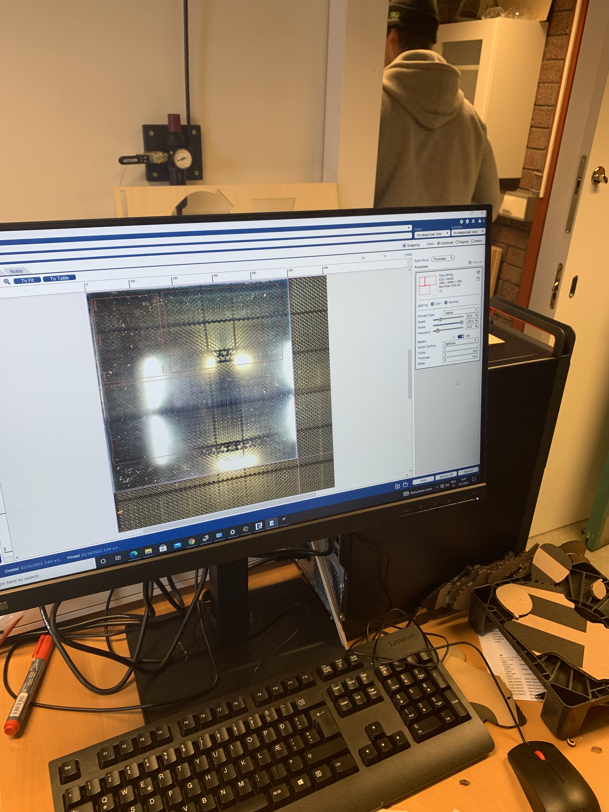
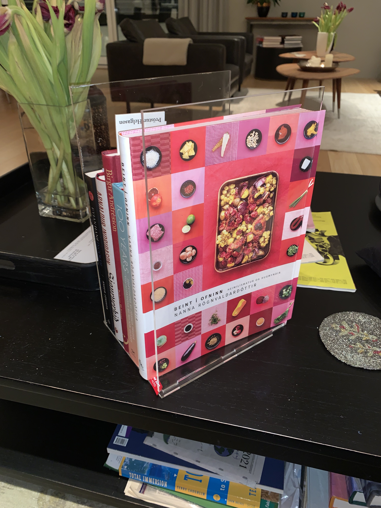
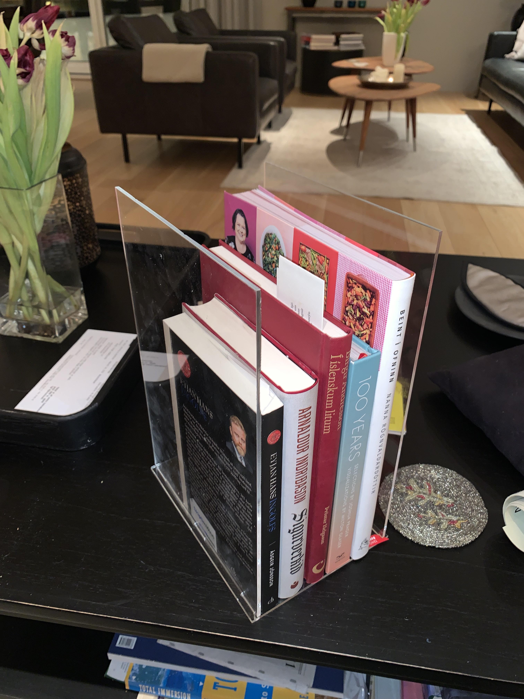

Making a vinyl sticker
Before making the press fit model I made a sticker out of vinyl using a vinyl cutter.
Setting up for the vinyl cutter
I found an image on the internet that I liked and opened it up in Inkscape.
.png)
Next, I had to change the format of the image to a vector graphic, since that's what the vinyl cutter wants.
Select path and then trace bitmap. The default settings should work just fine. Select OK. And then delete the old image. Save the new image as a SVG graphic
I followed this video.
Printing the sticker
Insert the vinyl of your liking in to the machine and make sure it's even and flat. Select ROLL on the machine. Select print on the computer where your SVG is located. Select properties and Get From Machine. Override the length to be the length of your design plus a 2cm buffer. Now print. Release the vinyl from the machine and use scissors to cut out your design.
Result
Laser Cutting
The next project was to make a pressfit, parametrically designed model.
I decided to make a simple bookstand. I used this video as a reference to help me design the object parametrically.
I already knew what I wanted to make so I went straight in to Fusion 360 and started sketching. I started with the base
.png)
I made sure to make space for the plates that would press in to the base.
Everything was set parametrically so I could change the size of the design at a later stage.
Next, I extruded the walls from the base.
.png)
I seperated the parts in order to prepare them for the laser cutter.
.png)
Now the design was almost ready to be exported as a DXF file. But before I could do that, I needed to offset for the kerf of the laser cutter
Fusion has a helpful feature for this exact purpose.
In the manufacture section, make a new setup. In fabrication select cutting. Create a 2d profile and select the kerf of your laser cutter.

Since the laser cutter cuts down the middle of the line of your drawing, some material on both sides gets destroyed. In order to account for this, one must measure the kerf of the cutter. For the process please see this page. Where my team documented the procedure.
Next, I prepared the design in Inkscape. I followed this helpful video.
After that was finished I opened the SVG in the laser cutter printing software and followed the instructions given to me by my teacher. Selecting the right speed, hertz and so forth.
Results
 I didn't encounter any issues or problems when making this object. Everything went rather smoothly.
Resources
| Kerf test | 1 hour |
| Drawing in Fusion | 3 hours |
| Processing in Inkscape | 2 hours |
| Laser cutting in FabLab | 1 hour |
| Documenting on website | 5 hours |
| Total | 12 hours |